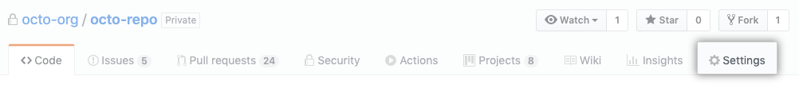
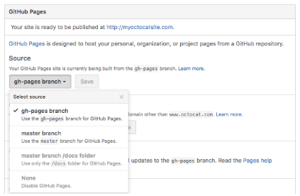

使用github托管代码，有时候需要展示一个简单的demo页面，如果专门为此维护一个demo网页，成本有点高，而且demo和代码分离，也不利于查阅。幸好github推出了一个github pages的服务。
啥是github pages
官方介绍中，GitHub pages是一个静态网页托管服务。说白了，就是github给我们分配一个域名，将我们代码库中的文件作为一个静态文件，我们就可以通过http访问。
如何使用
使用非常简单。可以选择发布master分支或者gh-pages分支。
- 在仓库中选择setting

- 在github pages部分选择master或者gh-pages分支，之后页面中会提示可以访问的地址。除此之外，还可以选择master分支下的docs跟目录作为托管的目录。道理都是相通的。

- 然后的浏览器中输入这个地址就可以了。一般来说是用户名+github.io+仓库名。默认打开页面是readme文件。当然也可以输入xxx.html来显示同级目录下的不同页面。
其他事项
- 这玩意可以做什么？
- 项目代码的示例
- 个人博客，jeklly, hexo, hugo都是在基于此玩的花活。
参考资料：
官方文档：官方文档